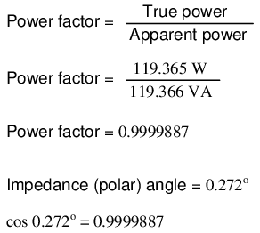

Consider a circuit for a single-phase AC power system, where a 120 volt, 60 Hz AC voltage source is delivering power to a resistive load: (Figure below)
Ac source drives a purely resistive load.
In this example, the current to the load would be 2 amps, RMS. The power dissipated at the load would be 240 watts. Because this load is purely resistive (no reactance), the current is in phase with the voltage, and calculations look similar to that in an equivalent DC circuit. If we were to plot the voltage, current, and power waveforms for this circuit, it would look like Figure below.

Current is in phase with voltage in a resistive circuit.
Note that the waveform for power is always positive, never negative for this resistive circuit. This means that power is always being dissipated by the resistive load, and never returned to the source as it is with reactive loads. If the source were a mechanical generator, it would take 240 watts worth of mechanical energy (about 1/3 horsepower) to turn the shaft.
Also note that the waveform for power is not at the same frequency as the voltage or current! Rather, its frequency is double that of either the voltage or current waveforms. This different frequency prohibits our expression of power in an AC circuit using the same complex (rectangular or polar) notation as used for voltage, current, and impedance, because this form of mathematical symbolism implies unchanging phase relationships. When frequencies are not the same, phase relationships constantly change.
As strange as it may seem, the best way to proceed with AC power calculations is to use scalar notation, and to handle any relevant phase relationships with trigonometry.
For comparison, let's consider a simple AC circuit with a purely reactive load in Figure below.
AC circuit with a purely reactive (inductive) load.

Power is not dissipated in a purely reactive load. Though it is alternately absorbed from and returned to the source.
Note that the power alternates equally between cycles of positive and negative. (Figure above) This means that power is being alternately absorbed from and returned to the source. If the source were a mechanical generator, it would take (practically) no net mechanical energy to turn the shaft, because no power would be used by the load. The generator shaft would be easy to spin, and the inductor would not become warm as a resistor would.
Now, let's consider an AC circuit with a load consisting of both inductance and resistance in Figure below.
AC circuit with both reactance and resistance.
At a frequency of 60 Hz, the 160 millihenrys of inductance gives us 60.319 Ω of inductive reactance. This reactance combines with the 60 Ω of resistance to form a total load impedance of 60 + j60.319 Ω, or 85.078 Ω ∠ 45.152o. If we're not concerned with phase angles (which we're not at this point), we may calculate current in the circuit by taking the polar magnitude of the voltage source (120 volts) and dividing it by the polar magnitude of the impedance (85.078 Ω). With a power supply voltage of 120 volts RMS, our load current is 1.410 amps. This is the figure an RMS ammeter would indicate if connected in series with the resistor and inductor.
We already know that reactive components dissipate zero power, as they equally absorb power from, and return power to, the rest of the circuit. Therefore, any inductive reactance in this load will likewise dissipate zero power. The only thing left to dissipate power here is the resistive portion of the load impedance. If we look at the waveform plot of voltage, current, and total power for this circuit, we see how this combination works in Figure below.

A combined resistive/reactive circuit dissipates more power than it returns to the source. The reactance dissipates no power; though, the resistor does.
As with any reactive circuit, the power alternates between positive and negative instantaneous values over time. In a purely reactive circuit that alternation between positive and negative power is equally divided, resulting in a net power dissipation of zero. However, in circuits with mixed resistance and reactance like this one, the power waveform will still alternate between positive and negative, but the amount of positive power will exceed the amount of negative power. In other words, the combined inductive/resistive load will consume more power than it returns back to the source.
Looking at the waveform plot for power, it should be evident that the wave spends more time on the positive side of the center line than on the negative, indicating that there is more power absorbed by the load than there is returned to the circuit. What little returning of power that occurs is due to the reactance; the imbalance of positive versus negative power is due to the resistance as it dissipates energy outside of the circuit (usually in the form of heat). If the source were a mechanical generator, the amount of mechanical energy needed to turn the shaft would be the amount of power averaged between the positive and negative power cycles.
Mathematically representing power in an AC circuit is a challenge, because the power wave isn't at the same frequency as voltage or current. Furthermore, the phase angle for power means something quite different from the phase angle for either voltage or current. Whereas the angle for voltage or current represents a relative shift in timing between two waves, the phase angle for power represents a ratio between power dissipated and power returned. Because of this way in which AC power differs from AC voltage or current, it is actually easier to arrive at figures for power by calculating with scalar quantities of voltage, current, resistance, and reactance than it is to try to derive it from vector, or complex quantities of voltage, current, and impedance that we've worked with so far.
We know that reactive loads such as inductors and capacitors dissipate zero power, yet the fact that they drop voltage and draw current gives the deceptive impression that they actually do dissipate power. This “phantom power” is called reactive power, and it is measured in a unit called Volt-Amps-Reactive (VAR), rather than watts. The mathematical symbol for reactive power is (unfortunately) the capital letter Q. The actual amount of power being used, or dissipated, in a circuit is called true power, and it is measured in watts (symbolized by the capital letter P, as always). The combination of reactive power and true power is called apparent power, and it is the product of a circuit's voltage and current, without reference to phase angle. Apparent power is measured in the unit of Volt-Amps (VA) and is symbolized by the capital letter S.
As a rule, true power is a function of a circuit's dissipative elements, usually resistances (R). Reactive power is a function of a circuit's reactance (X). Apparent power is a function of a circuit's total impedance (Z). Since we're dealing with scalar quantities for power calculation, any complex starting quantities such as voltage, current, and impedance must be represented by their polar magnitudes, not by real or imaginary rectangular components. For instance, if I'm calculating true power from current and resistance, I must use the polar magnitude for current, and not merely the “real” or “imaginary” portion of the current. If I'm calculating apparent power from voltage and impedance, both of these formerly complex quantities must be reduced to their polar magnitudes for the scalar arithmetic.
There are several power equations relating the three types of power to resistance, reactance, and impedance (all using scalar quantities):
Please note that there are two equations each for the calculation of true and reactive power. There are three equations available for the calculation of apparent power, P=IE being useful only for that purpose. Examine the following circuits and see how these three types of power interrelate for: a purely resistive load in Figure below, a purely reactive load in Figure below, and a resistive/reactive load in Figure below.
Resistive load only:
True power, reactive power, and apparent power for a purely resistive load.
Reactive load only:
True power, reactive power, and apparent power for a purely reactive load.
Resistive/reactive load:
True power, reactive power, and apparent power for a resistive/reactive load.
These three types of power -- true, reactive, and apparent -- relate to one another in trigonometric form. We call this the power triangle: (Figure below).
Power triangle relating appearant power to true power and reactive power.
Using the laws of trigonometry, we can solve for the length of any side (amount of any type of power), given the lengths of the other two sides, or the length of one side and an angle.
As was mentioned before, the angle of this “power triangle” graphically indicates the ratio between the amount of dissipated (or consumed) power and the amount of absorbed/returned power. It also happens to be the same angle as that of the circuit's impedance in polar form. When expressed as a fraction, this ratio between true power and apparent power is called the power factor for this circuit. Because true power and apparent power form the adjacent and hypotenuse sides of a right triangle, respectively, the power factor ratio is also equal to the cosine of that phase angle. Using values from the last example circuit:
It should be noted that power factor, like all ratio measurements, is a unitless quantity.
For the purely resistive circuit, the power factor is 1 (perfect), because the reactive power equals zero. Here, the power triangle would look like a horizontal line, because the opposite (reactive power) side would have zero length.
For the purely inductive circuit, the power factor is zero, because true power equals zero. Here, the power triangle would look like a vertical line, because the adjacent (true power) side would have zero length.
The same could be said for a purely capacitive circuit. If there are no dissipative (resistive) components in the circuit, then the true power must be equal to zero, making any power in the circuit purely reactive. The power triangle for a purely capacitive circuit would again be a vertical line (pointing down instead of up as it was for the purely inductive circuit).
Power factor can be an important aspect to consider in an AC circuit, because any power factor less than 1 means that the circuit's wiring has to carry more current than what would be necessary with zero reactance in the circuit to deliver the same amount of (true) power to the resistive load. If our last example circuit had been purely resistive, we would have been able to deliver a full 169.256 watts to the load with the same 1.410 amps of current, rather than the mere 119.365 watts that it is presently dissipating with that same current quantity. The poor power factor makes for an inefficient power delivery system.
Poor power factor can be corrected, paradoxically, by adding another load to the circuit drawing an equal and opposite amount of reactive power, to cancel out the effects of the load's inductive reactance. Inductive reactance can only be canceled by capacitive reactance, so we have to add a capacitor in parallel to our example circuit as the additional load. The effect of these two opposing reactances in parallel is to bring the circuit's total impedance equal to its total resistance (to make the impedance phase angle equal, or at least closer, to zero).
Since we know that the (uncorrected) reactive power is 119.998 VAR (inductive), we need to calculate the correct capacitor size to produce the same quantity of (capacitive) reactive power. Since this capacitor will be directly in parallel with the source (of known voltage), we'll use the power formula which starts from voltage and reactance:
Let's use a rounded capacitor value of 22 µF and see what happens to our circuit: (Figure below)
Parallel capacitor corrects lagging power factor of inductive load. V2 and node numbers: 0, 1, 2, and 3 are SPICE related, and may be ignored for the moment.
The power factor for the circuit, overall, has been substantially improved. The main current has been decreased from 1.41 amps to 994.7 milliamps, while the power dissipated at the load resistor remains unchanged at 119.365 watts. The power factor is much closer to being 1:

Since the impedance angle is still a positive number, we know that the circuit, overall, is still more inductive than it is capacitive. If our power factor correction efforts had been perfectly on-target, we would have arrived at an impedance angle of exactly zero, or purely resistive. If we had added too large of a capacitor in parallel, we would have ended up with an impedance angle that was negative, indicating that the circuit was more capacitive than inductive.
A SPICE simulation of the circuit of (Figure above) shows total voltage and total current are nearly in phase. The SPICE circuit file has a zero volt voltage-source (V2) in series with the capacitor so that the capacitor current may be measured. The start time of 200 msec ( instead of 0) in the transient analysis statement allows the DC conditions to stabilize before collecting data. See SPICE listing “pf.cir power factor”.
pf.cir power factor V1 1 0 sin(0 170 60) C1 1 3 22uF v2 3 0 0 L1 1 2 160mH R1 2 0 60 # resolution stop start .tran 1m 200m 160m .end
The Nutmeg plot of the various currents with respect to the applied voltage Vtotal is shown in (Figure below). The reference is Vtotal, to which all other measurements are compared. This is because the applied voltage, Vtotal, appears across the parallel branches of the circuit. There is no single current common to all components. We can compare those currents to Vtotal.

Zero phase angle due to in-phase Vtotal and Itotal . The lagging IL with respect to Vtotal is corrected by a leading IC .
Note that the total current (Itotal) is in phase with the applied voltage (Vtotal), indicating a phase angle of near zero. This is no coincidence. Note that the lagging current, IL of the inductor would have caused the total current to have a lagging phase somewhere between (Itotal) and IL. However, the leading capacitor current, IC, compensates for the lagging inductor current. The result is a total current phase-angle somewhere between the inductor and capacitor currents. Moreover, that total current (Itotal) was forced to be in-phase with the total applied voltage (Vtotal), by the calculation of an appropriate capacitor value.
Since the total voltage and current are in phase, the product of these two waveforms, power, will always be positive throughout a 60 Hz cycle, real power as in Figure above. Had the phase-angle not been corrected to zero (PF=1), the product would have been negative where positive portions of one waveform overlapped negative portions of the other as in Figure above. Negative power is fed back to the generator. It cannot be sold; though, it does waste power in the resistance of electric lines between load and generator. The parallel capacitor corrects this problem.
Note that reduction of line losses applies to the lines from the generator to the point where the power factor correction capacitor is applied. In other words, there is still circulating current between the capacitor and the inductive load. This is not normally a problem because the power factor correction is applied close to the offending load, like an induction motor.
It should be noted that too much capacitance in an AC circuit will result in a low power factor just as well as too much inductance. You must be careful not to over-correct when adding capacitance to an AC circuit. You must also be very careful to use the proper capacitors for the job (rated adequately for power system voltages and the occasional voltage spike from lightning strikes, for continuous AC service, and capable of handling the expected levels of current).
If a circuit is predominantly inductive, we say that its power factor is lagging (because the current wave for the circuit lags behind the applied voltage wave). Conversely, if a circuit is predominantly capacitive, we say that its power factor is leading. Thus, our example circuit started out with a power factor of 0.705 lagging, and was corrected to a power factor of 0.999 lagging.
When the need arises to correct for poor power factor in an AC power system, you probably won't have the luxury of knowing the load's exact inductance in henrys to use for your calculations. You may be fortunate enough to have an instrument called a power factor meter to tell you what the power factor is (a number between 0 and 1), and the apparent power (which can be figured by taking a voltmeter reading in volts and multiplying by an ammeter reading in amps). In less favorable circumstances you may have to use an oscilloscope to compare voltage and current waveforms, measuring phase shift in degrees and calculating power factor by the cosine of that phase shift.
Most likely, you will have access to a wattmeter for measuring true power, whose reading you can compare against a calculation of apparent power (from multiplying total voltage and total current measurements). From the values of true and apparent power, you can determine reactive power and power factor. Let's do an example problem to see how this works: (Figure below)
Wattmeter reads true power; product of voltmeter and ammeter readings yields appearant power.
First, we need to calculate the apparent power in kVA. We can do this by multiplying load voltage by load current:
As we can see, 2.308 kVA is a much larger figure than 1.5 kW, which tells us that the power factor in this circuit is rather poor (substantially less than 1). Now, we figure the power factor of this load by dividing the true power by the apparent power:
Using this value for power factor, we can draw a power triangle, and from that determine the reactive power of this load: (Figure below)
Reactive power may be calculated from true power and appearant power.
To determine the unknown (reactive power) triangle quantity, we use the Pythagorean Theorem “backwards,” given the length of the hypotenuse (apparent power) and the length of the adjacent side (true power):
If this load is an electric motor, or most any other industrial AC load, it will have a lagging (inductive) power factor, which means that we'll have to correct for it with a capacitor of appropriate size, wired in parallel. Now that we know the amount of reactive power (1.754 kVAR), we can calculate the size of capacitor needed to counteract its effects:

Rounding this answer off to 80 µF, we can place that size of capacitor in the circuit and calculate the results: (Figure below)

Parallel capacitor corrects lagging (inductive) load.
An 80 µF capacitor will have a capacitive reactance of 33.157 Ω, giving a current of 7.238 amps, and a corresponding reactive power of 1.737 kVAR (for the capacitor only). Since the capacitor's current is 180o out of phase from the the load's inductive contribution to current draw, the capacitor's reactive power will directly subtract from the load's reactive power, resulting in:
This correction, of course, will not change the amount of true power consumed by the load, but it will result in a substantial reduction of apparent power, and of the total current drawn from the 240 Volt source: (Figure below)
Power triangle before and after capacitor correction.
The new apparent power can be found from the true and new reactive power values, using the standard form of the Pythagorean Theorem:
This gives a corrected power factor of (1.5kW / 1.5009 kVA), or 0.99994, and a new total current of (1.50009 kVA / 240 Volts), or 6.25 amps, a substantial improvement over the uncorrected value of 9.615 amps! This lower total current will translate to less heat losses in the circuit wiring, meaning greater system efficiency (less power wasted).
Contributors to this chapter are listed in chronological order of their contributions, from most recent to first. See Appendix 2 (Contributor List) for dates and contact information.
Jason Starck (June 2000): HTML document formatting, which led to a much better-looking second edition.
Lessons In Electric Circuits copyright (C) 2000-2023 Tony R. Kuphaldt, under the terms and conditions of the CC BY License.
{kind=link}
{kind=link}
{kind=link}
{kind=link}
{kind=link}
{kind=link}
{kind=link}
{kind=link}
{kind=link}
{kind=link}
{kind=link}
{kind=link}
{kind=link}
{kind=link}
{kind=link}
{kind=link}